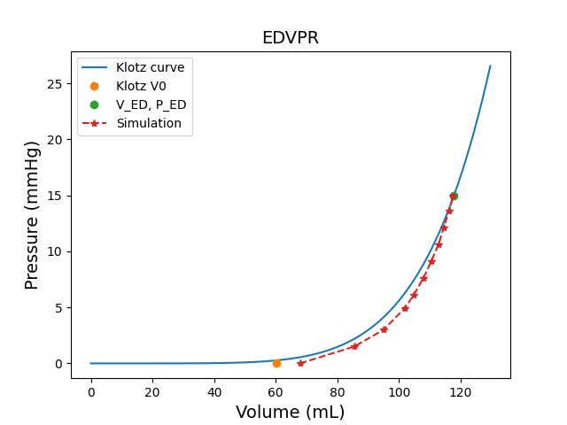
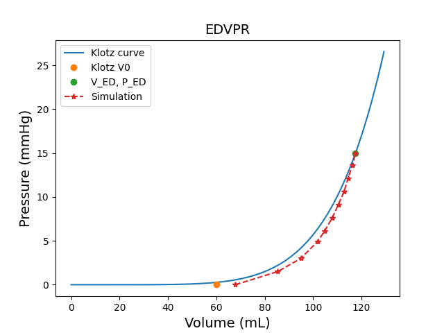

Note
Go to the end to download the full example code.
Run a left ventricle mechanical simulation#
This example shows you how to perform the following actions:
Generate a left-ventricle model from a labeled surface.
Set up the model for mechanical simulation:
Generate fibers.
Assign material.
Tune boundary conditions.
Compute stress-free configuration.
Run the simulation for one heartbeat.
Postprocess the results:
Plot the stress-free configuration versus the end-diastole configuration.
Plot the Klotz curve.
Animate the simulation results.
Plot the PV loop.
Warning
When using a standalone version of the DPF Server, you must accept the license terms. To accept these terms, you can set this environment variable:
import os
os.environ["ANSYS_DPF_ACCEPT_LA"] = "Y"
Perform the required imports#
Import the required modules and set relevant paths, including that of the working directory, heart model, and LS-DYNA executable file.
import copy
import glob
import json
import os
from pathlib import Path
import time
import matplotlib.pyplot as plt
from pint import Quantity
import pyvista as pv
from ansys.health.heart.examples import get_input_leftventricle
import ansys.health.heart.models as models
from ansys.health.heart.post.auto_process import zerop_post
from ansys.health.heart.post.dpf_utils import ICVoutReader
from ansys.health.heart.settings.material.material import ACTIVE, ANISO, ISO, Mat295
from ansys.health.heart.simulator import DynaSettings, MechanicsSimulator
Get the model input surface and part definitions#
path_to_surface, path_to_part_definitions = get_input_leftventricle()
# Plot the input surface.
surface = pv.read(path_to_surface)
surface.plot()
# Load and print the parts defined in the JSON file.
with open(path_to_part_definitions, "r") as f:
part_definitions = json.load(f)
# Print the part definitions using indentation for better readability.
print(json.dumps(part_definitions, indent=4))
{
"Left ventricle": {
"id": 1,
"enclosed_by_boundaries": {
"left-ventricle-endocardium": 1,
"left-ventricle-epicardium": 2,
"interface_left-ventricle-myocardium_mitral-valve-plane": 3,
"interface_left-ventricle-myocardium_aortic-valve-plane": 4
}
}
}
Load the input surface and mesh the model.#
Set the working directory.
workdir = (
Path.home() / "pyansys-heart" / "downloads" / "Rodero2021" / "01" / "LeftVentricle-simulation"
)
# Initialize a left ventricle model.
model: models.LeftVentricle = models.LeftVentricle(working_directory=workdir)
# Load the input surface.
model.load_input(surface, part_definitions, scalar="surface-id")
# Mesh the volume.
model.mesh_volume(use_wrapper=True, global_mesh_size=4.0, _global_wrap_size=4.0)
# Update the model.
model.update()
# Plot the mesh.
model.plot_mesh()
Note
This mesh is very coarse for and for demonstration purposes. In practice, the mesh size should be smaller.
Instantiate the simulator#
Instantiate the simulator and define settings.
# Specify the LS-DYNA path.
lsdyna_path = r"ls-dyna_mpp"
# Instantiate LS-DYNA settings.
dyna_settings = DynaSettings(
lsdyna_path=lsdyna_path, dynatype="intelmpi", num_cpus=2, platform="windows"
)
# Instantiate the simulator, modifying options as necessary.
simulator = MechanicsSimulator(
model=model,
dyna_settings=dyna_settings,
simulation_directory=os.path.join(workdir, "simulation-mechanics"),
)
Load simulation settings#
Load the default settings.
simulator.settings.load_defaults()
Compute fiber orientation#
Compute fiber orientation and plot the fibers.
simulator.compute_fibers(method="D-RBM")
# Plot the fiber orientation by streamlines.
simulator.model.plot_fibers(n_seed_points=2000)
<pyvista.plotting.plotter.Plotter object at 0x000001FFD35D9050>
Assign a material to the left ventricle.#
# Define a material for the myocardium.
myocardium = Mat295(
rho=0.001,
iso=ISO(itype=-3, beta=2, kappa=1.0, k1=0.20e-3, k2=6.55),
aniso=ANISO(
atype=-1,
fibers=[ANISO.HGOFiber(k1=0.00305, k2=29.05), ANISO.HGOFiber(k1=1.25e-3, k2=36.65)],
k1fs=0.15e-3,
k2fs=6.28,
),
active=ACTIVE(), # This uses the default active model
)
# Assign the material to the left ventricle.
simulator.model.left_ventricle.meca_material = myocardium
Compute the stress-free configuration#
# Compute the stress-free configuration and estimate initial stress.
simulator.compute_stress_free_configuration()
# Plot stress-free geometry.
report, stress_free_coord, guess_ed_coord = zerop_post(
os.path.join(workdir, "simulation-mechanics", "zeropressure"), model
)
zerop = copy.deepcopy(model.mesh)
# Update the points of the mesh with the stress-free coordinates.
zerop.points = stress_free_coord
# Plot the original and stress-free meshes.
plotter = pv.Plotter()
plotter.add_mesh(zerop, color="red", opacity=0.3, label="stress-free shape")
plotter.add_mesh(simulator.model.mesh, color="grey", opacity=0.2, label="end-of-diastole")
plotter.add_legend()
plotter.show()
# Print the stress free report in readable format.
print(json.dumps(report, indent=4))
- 
- 
{
"Simulation output time (ms)": [
0.0,
100.0,
200.23744201660156,
329.7889709472656,
409.2218017578125,
509.2218017578125,
609.2218017578125,
709.2218017578125,
809.2218017578125,
909.2218017578125,
1000.0
],
"Convergence": {
"max_error (mm)": 0.0,
"mean_error (mm)": 0.0
},
"Left ventricle EOD pressure (mmHg)": 15.0,
"True left ventricle volume (mm3)": 117537.10032219399,
"Simulation left ventricle volume (mm3)": [
67873.59161815229,
85416.36313267954,
94974.29402146801,
101931.24791258169,
104797.30955416568,
107955.9519721437,
110458.76540857709,
112828.7940870969,
114479.32023918148,
116263.38131122515,
117537.10032219399
]
}
Note
The input geometry is assumed to be at the end-of-diastole with a ventricular pressure of 15 mmHg. You can modify this pressure in the settings.
Run the main simulation#
# Tune the boundary conditions at the valve regions: in this model there are
# springs in radial and normal direction of the valve region which constrain the model.
simulator.settings.mechanics.boundary_conditions.valve["stiffness"] = Quantity(0.02, "MPa/mm")
# Start the mechanical simulation.
simulator.simulate()
Note
By default, the simulation is coupled to an open-loop circulation model with a constant preload and a Windkessel-type afterload. Moreover, the simulation is set to run for a single heartbeat.
Postprocessing#
# Plot pressure-volume loop
# ~~~~~~~~~~~~~~~~~~~~~~~~~
# Read the LS-DYNA binout file that contains cavity volumes and pressure.
icvout = ICVoutReader(os.path.join(workdir, "simulation-mechanics", "main-mechanics", "binout0000"))
pressure = icvout.get_pressure(1)
volume = icvout.get_volume(1)
# Convert to mL and mmHg and plot the pressure and volume curves.
plt.plot(volume / 1000, pressure * 7500, label="Left ventricle")
plt.xlabel("Volume (mL)")
plt.ylabel("Pressure (mmHg)")
plt.title("Pressure-volume loop")
plt.show()
# Plot the displacement field
# ~~~~~~~~~~~~~~~~~~~~~~~~~~~
mesh_folder = os.path.join(workdir, "simulation-mechanics", "main-mechanics", "post", "vtks")
mesh_files = sorted(glob.glob(f"{mesh_folder}/*.vtu"))
mesh_list = []
for mesh_file in mesh_files:
mesh = pv.read(mesh_file)
mesh.set_active_vectors("displacement")
mesh_list.append(mesh)
# Create a PyVista plotter
plotter = pv.Plotter()
if mesh_files:
actor = plotter.add_mesh(mesh_list[0])
plotter.show(interactive_update=True)
# Animate the meshes over time
# ~~~~~~~~~~~~~~~~~~~~~~~~~~~~
# Use a function for animation.
def animate():
for m in mesh_list:
plotter.clear()
plotter.add_mesh(m, show_edges=True, opacity=0.5, scalars=None)
plotter.update()
plotter.render()
time.sleep(0.1) # Control animation speed
# Animate the model.
animate()
Total running time of the script: (8 minutes 22.170 seconds)